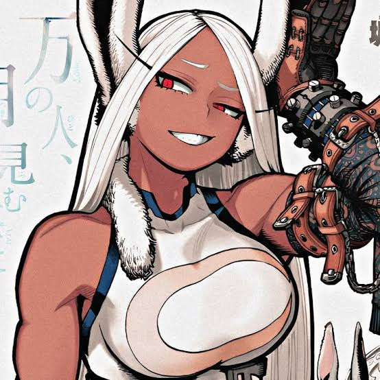
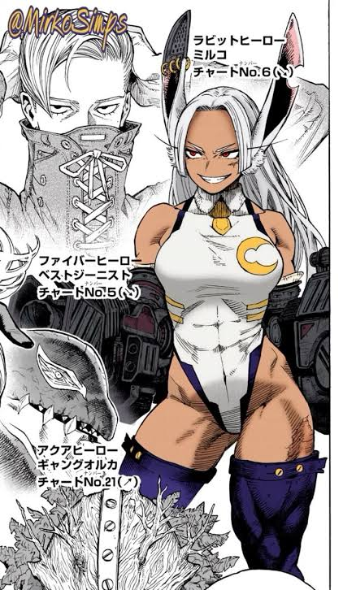

Pernas de guerra
Saltos e chutes com potência capaz de derrubar vilões monstruosos num único golpe.
Heroína Nº 5 do Japão · Rabbit Hero
Força sem limites.
Rumi Usagiyama não espera pelo resgate perfeito. Ela pula na frente do perigo, confia nas próprias pernas e resolve o problema — sozinha, se precisar.

Ficha da heroína
Estilo de combate
Não é só o Quirk. É a combinação de um poder fora de série com técnica e cabeça fria.
Saltos e chutes com potência capaz de derrubar vilões monstruosos num único golpe.
Audição sobre-humana: ela ouve o movimento do inimigo antes de ele acontecer.
Técnica de luta que funciona mesmo quando o Quirk é anulado. A base de tudo.

TreinoA rotina por trás da lenda
Nenhum Quirk sobrevive sem uma base física implacável. Descubra a rotina brutal e a filosofia de combate que transformaram Rumi Usagiyama na heroína mais temida pelos vilões — mesmo sem depender só do seu poder.
Fã-arte